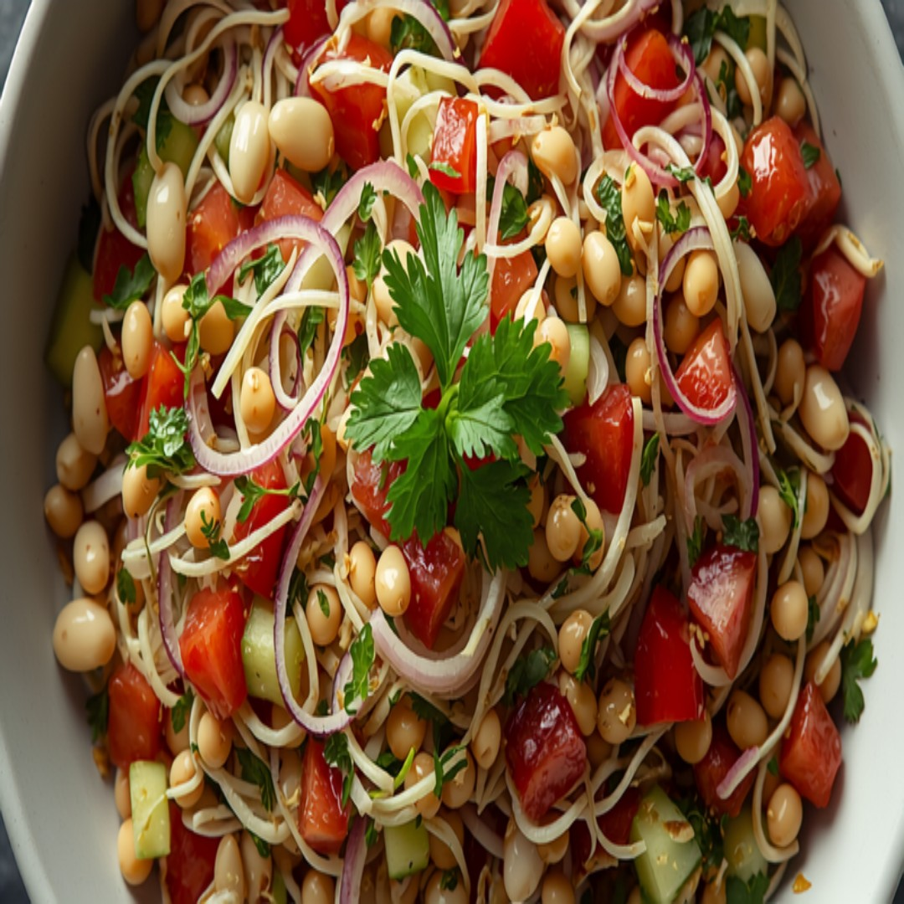

Isang tunay na hilaw na tinubuang moong salad mula Hilagang India na may pipino, kamatis, at dayap -- sariwa, malutong, at likas na mataas sa plant protein at fiber.
Impormasyon sa Nutrisyon (bawat serving)
Bakit Ito Bagay sa Diyetang Diabetic-Friendly
May 15g lang na carbs kada serving, mas magaan na pagpipilian sa carbs kahit hindi ito strict low-carb, at ang tinatayang glycemic index nitong ~25 ay nangangahulugang mabagal ma-digest ang carbs nito sa halip na biglang magpataas ng asukal sa dugo, at ang 7g na protein kada serving ay tumutulong din na pabagalin ang digestion at pakinisin ang anumang pagtaas pagkatapos kumain, at ang 5g na fiber kada serving ay nagdaragdag ng parehong epekto ng pagpapabagal.
Mga Sangkap
- 2 cup475 ml tinubuang moong
- 1/2 whole1/2 whole pipino
- 1/2 whole1/2 whole kamatis
- 1/4 whole1/4 whole pulang sibuyas
- 1 tbsp15 ml katas ng dayap
- 1/4 tsp1 ml asin
- 0.12 tsp1 ml paminta
- 2 tbsp30 ml sariwang wansoy
Nasa GlucoBeacon app na ang recipe na ito — idagdag agad sa iyong Shopping List at daily carb tracker sa isang tap, libre.
- 🍽️ Restaurant Advisor — 3,700+ menu items mula sa 53 chains
- 📷 AI Food Camera — i-point, i-scan, malaman agad ang carbs
- 🩺 A1C Estimator — mula sa mga naka-log na reading mo
Paraan ng Paggawa
- Ihalo ang tinubuang moong, pipino, kamatis, at pulang sibuyas sa malaking mangkok.
- Patakan ng katas ng dayap at haluing mabuti.
- Timplahan ng asin at paminta.
- Palamutihan ng sariwang wansoy at ihain nang malamig o sa temperatura ng silid.